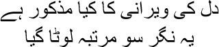
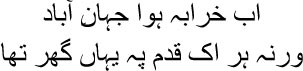
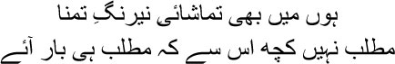

13

What do I say of my plundered heart
This city has been looted again and again
 ust like me, Dilli has also been destroyed repeatedly, only to be back on its feet each time. Sometimes I feel that the lord wrote our destinies—Dilli’s and mine—with the same quill. Although a degree of peace had returned to Dilli when I came to the city, it was the peace of death, for Dilli had long lost its lustre. You’ve read it in the history books—how waves of Farsi and Afghan and Maratha invasions, along with the infighting in the court, left the city in ruins. Everyone knows that poets like Mir and Sauda were forced to leave Dilli for Lucknow. Why did they have to go? Let me tell you a sher of Mir sahib’s, then:
ust like me, Dilli has also been destroyed repeatedly, only to be back on its feet each time. Sometimes I feel that the lord wrote our destinies—Dilli’s and mine—with the same quill. Although a degree of peace had returned to Dilli when I came to the city, it was the peace of death, for Dilli had long lost its lustre. You’ve read it in the history books—how waves of Farsi and Afghan and Maratha invasions, along with the infighting in the court, left the city in ruins. Everyone knows that poets like Mir and Sauda were forced to leave Dilli for Lucknow. Why did they have to go? Let me tell you a sher of Mir sahib’s, then:

Once a bustling city, it’s emptied out now
Once there was a house here at every step
Dilli was emptied out this way before my own eyes too. It felt like being in Karbala, but still I could not abandon this city. Often I wondered whether I was needed here. It had come into my life in the form of a prison, but still I had not been able to bid farewell to it. Do you know why? As I said, because the lord wrote our destinies with the same quill, Dilli’s and mine. How could I run away? Whatever life gave me, and whatever it held back, were all carved on the soul of the city. People might call it madness, but how was I to live without this junoon, this obsession? I had my back to the wall, but so what? Fire away, keep firing, I would say to myself. Let me find out how much more blood you want to see flowing, how much more of my brain you want to spill; humiliate me as much as you like, but you will still not be able to touch the fragrance deep inside, you will still not be able to damage the words that I put together for my ghazals. My sins will not survive, people will forget your attacks too. Only the words and rhythms will still be alive, and their name will still be Mirza Ghalib. But never mind all this, people will laugh; they’ll say no one can beat poets at blowing their own trumpet. When I was in Calcutta, I heard someone say, ‘You cannot live with Lakshmi and Saraswati at the same time.’ I couldn’t share a house with Lakshmi. I had fallen in love with Saraswati, after all. Ya Allah! The things I say! Gustakhi maaf, but I haven’t seen any other Hindu goddess with a veena, you see. I fell in love with Munirabai for her music. Umrao Begum would only whisper the Quran and the Hadith into my ears. Just imagine sacred flowers, Manto bhai, which no bee has ever alighted on. If the bee doesn’t drink the nectar that the flower is shoring up, where is the fulfilment? My father-in-law, Nawab Illahi Buksh Khan, would also get enraged when he heard me say all this. He wrote shers too, his pseudonym was Mahroof, as you well know. Do you know what makes me laugh? Can you locate even a single sher of Mahroof’s today? But history says he was a devoted Muslim. I bow to such devotion. Allah didn’t write about the poet Mahroof in any of his books. Do you know why not? Allah understands poetry, you see. How many wives did Hazrat, his messenger, have? And the Quran? The Hazrat had received it from Allah in the form of the rhythms of poetry. The Quran is an extraordinary work of poetry for me, Manto bhai. Birth and death, love and destiny, the entire universe, are engaged in sport in it. Just like the Vedas and the Upanishads or the Bhagvat Gita or the Zend-a-vesta; I was exhausted trying to enter this sport through my ghazals. Couldn’t I have written like Zauq sahib or Momin sahib? But I staked my life; I even told my shagird, my pupil Hargopal Tafta, look, a ghazal isn’t pretty words or rhythm, you cannot write a ghazal unless your heart has bled. In my solitude I have known how blood soaked each of my words is, Manto sahib.
But I drift. Pardon me, my entombed brothers who are listening. You know what, the failures of my life are all connected with these meandering thoughts of mine. I couldn’t even answer my accusers properly; I used to have memory lapses, you see. Every day was a new one for me—my life lasted one single day only—I have no idea what happened the next day. I admit without reservations to all of you that I have sinned many times—since the Shariyat calls such acts sins. But then judgement is not for this world, it will be delivered when the qayamat comes, in the court of the lord. But I had no desire to avenge myself on anyone. Do you know why? You’ll laugh, but I’ll say it anyway. Thank goodness I went to bed with poetry. Thank goodness I never thought of building my own haveli in Dilli. Thank goodness I was belittled at one mushaira after another. Thank goodness I did not get my pension despite my best efforts to chase it. Thank goodness I had to rely on the charity of nawabs and maharajas. Thank goodness I was reminded over and over again that your father did not possess a house, Ghalib, and you don’t possess one either. Thank goodness I was born like an orphan and lived like an orphan. Thank goodness I did time in jail for gambling—for this was how I got to know human beings. In fact, they are all shadow puppets—they have no idea where life is taking them. I didn’t, either. But they blindly believed that they were on their way to Mecca. I had never wanted to tread that path, Manto bhai. Do you remember this sher?

I am witness to the ever-changing colours of desire
Whether my desire will ever be fulfilled is irrelevant
Gustakhi maaf, all I’ve been talking about is the darkness inside. No, let’s turn to something a little more colourful. No one likes hearing about the desolate road. I don’t, either; can anyone possibly endure the incredible lightness of being without laughter and jokes? Life is so fragile—we will soon be separated from one another—that we cannot bear living. Would anyone believe, Manto bhai, that I could not bear the paltry weight of a single petal from a dead rose? What will people say when they hear all this? That the scoundrel knew how to charm people with his words, but what did he give his wife? Why didn’t any of their children survive beyond fifteen months even though they had so many of them? What did that idiot ever do for his sons and daughters? There’s a story that I tell these people. Have you heard of Rabeya? I’m talking of the famous Sufi devotee Rabeya of Basra, who was born to a family of beggars and was forced to survive much of her life after her parents’ death as a slave. Ittar sahib had written a story about her in his Tazkirat al-Awliya—Memoirs of the Saints. It was an amusing tale.
Someone had asked Rabeya, ‘Where are you from?’
— Another world, smiled Rabeya.
— And where are you going?
— To yet another world.
— Then what were you doing in this one?
— I dropped in to play, bhaijaan.
Don’t mistake me for a Sufi devotee because I told this story. I never had the capability of being one. I am only a man who sat before the mirror all his life, staring at his own reflection. How could I walk the path of devotion? I never made any such claim. But when those who had led their entire lives correctly, without leaving a single stain anywhere, told me that they were following the road to the Din, I had no option but to chuckle. Why had the Lord made Adam with dust, then? Why did he push him towards sin? If Allah had confined himself within his shell, how would he have known himself? Through Adam he saw himself. In the process of sinning he saw where salvation lay. Oh no, I’m not making excuses. I have heard many stories from the Mahabharata. Who has the right to be considered the most virtuous? Only Yudhishthira, whose entire life is a saga of sin. None of the other Pandavas sinned as much as he. But still the God Dharma chose to accompany him in the guise of a dog. Why? Even I don’t have the answer, Manto bhai. Let me tell you about another person. Have you heard of Pingala the prostitute? She’s been written about in the Uddhava Gita. I heard the story from a dastango at the Jama Masjid. Dattatreya Avadhoot Rajarshi was telling Yadu about his twenty-four gurus, one of whom was Pingala. Avadhoot had seen her one evening, standing in front of her house in search of a client. Evening deepened into night, but no one passed by. No client tonight, Pingala mused. It has come to this because I do not pray to God. Her mounting disappointment changing finally to serenity, she fell asleep at dawn. What did Pingala teach Avadhoot? Peace comes from abandoning hope. Just imagine, even a prostitute can be a guru.
But my father-in-law Mahroof sahib had the answer to every question in the world. When we came to Dilli, Umrao Begum and I put up at his house to begin with, we even stayed there for some time. But the man was intolerable. He would count everything in pennies. How can a human being be sized up this way? So I used to mock him. What else can you do with people who tell you at every step what your choice should be? The more you mock them, the more you will see their mirrors shatter. All these pious people, I’ve noticed, have mastered only one art. How—and in how many ways—to humiliate others. My father may not have had a house of his own, but Turkish blood flows in my veins; how could I stomach such humiliation? So the ace up my sleeve was my mockery. Mock that swine Mahroof sahib so ruthlessly that the idol would be smashed.
I used to love street dogs since childhood, Manto bhai. The dogs of Akbarabad would follow me about everywhere. I used to cuddle them, talk to them. I believe with all my heart that no one can be your friend the way a street dog can. They used to snuggle up to me too, sniff at me, and look at me as though they really did have a lot to tell me. But I didn’t know the language of dogs; if the Lord had been kind enough to grant me this gift, my life would not have turned more and more arid by the day. And Mahroof sahib couldn’t stand dogs at all. One day he said, ‘You live in a haveli, mian, why so thick with street dogs?’
You damned dog, I had wanted to retort. But I couldn’t. I couldn’t possibly say this to the person I lived off. But I wasn’t his slave just because I enjoyed his hospitality. So I began to play the fool with him.
— They haven’t done you any harm, have they?
— Could any animal be dirtier? You should bathe if their shadow falls on you. Do you?
— No.
— Tauba, tauba, don’t you follow any of the precepts of the Quran?
— Of course I do.
— Then why so thick with dogs?
I laughed. —I’m a dog too, Mahroof sahib.
— Meaning?
— My father didn’t have a house. I grew up in my grandfather’s house. Now I live in yours after marrying your daughter. Why shouldn’t you call me a dog, then? By rights I should have remained on the street.
— You talk too much, mian. You want to shit on the hand that feeds you. Mahroof sahib growled in rage.
— Just like a dog does.
— Mind your tongue, mian.
— Have you seen a dog on heat, Mahroof sahib? Have you seen how it behaves on the roads? There’s a dog on heat hidden inside some human beings. Such human beings cannot cleanse themselves even if they bathe a thousand times.
— What are you trying to say?
— Cleanse yourself first.
Why does someone who spouts the Quran and the Hadith at the drop of a hat visit the kothas even when he has a wife at home, Manto bhai? Does such a person have the right to comment on others’ purity?
I never claimed to be pure. To tell the truth, it was greed that brought me to Dilli. Mahroof sahib’s was an aristocratic family with connections to the royal court, I had expected to find a place in court as a shair and lead a life of my choice; I was hopelessly addicted to wine and women at the time. I had no relationship with the Begum. She was involved with her prayers and the Quran and the Hadith; her obsession only kept growing. Eventually she even began to use her own set of plates and dishes. Why? Because I drank, I wrote ghazals, both of which were haraam according to her Quran. She was extremely conscientious, ensuring that all my needs were looked after, but this couldn’t be termed love. Or, I don’t know, maybe this was the form of Umrao Begum’s love. But you know what, the older I got, the more I lost faith in the word called love. Did I really lose faith? I do know that my life grew more and more bereft by the day. Why? Maybe I lacked love within me, I couldn’t love anyone. Today in my grave I feel I was a beggar for love, but I didn’t love anyone myself. I am not Mir sahib—think of how much he had endured just for the sake of love. All of us know the story of Laila and Majnu, but how many of us know about those days in Mir sahib’s life? He demonstrated with his own life what it was like to lose yourself over love, to be diwana for ishq.
Yes, I’m talking of Mir sahib now, I know you cannot take too much whining about one person’s life. I know I’m telling the story of my life in great detail, but if I had to tell it in just one word, I would only have to draw a question mark on a piece of paper. Let’s go back to those days in Mir sahib’s life instead.
His heart was a pockmarked city, Mir sahib’s. He wrote about this city in his masnavi Muamlat-e-Ishq—Stages of Love. In my opinion, of all the masnavis about love that Mir sahib wrote, Muamlat was the best. It was like a lamentation echoing in the sheesh mahal. Do you know what the lament was for? It was for the moon. Ever since his grandmother used to tell him when washing his face as a child, ‘Look at the sky my child, there’s the moon,’ it had become part of his life. And then he was stricken by the same moon. He used to see his lover in the moon, which was how he went insane one day. Who was his lover?
I don’t know her name, Manto bhai. In the society in which we lived, a woman’s name was only available in stories. Who needed her name? The mullahs had shrouded her in a burqa, obliterating her very identity as an independent person. But we can easily give her a name today, can’t we? What name shall we choose? How about Mehr Nigar? Isn’t it a beautiful name? So Mir sahib fell in love with this Mehr Nigar when he was about eighteen. Mehr Nigar, who was married, was somewhat older—rather than younger—than Mir sahib, but because they belonged to the same family, there was no purdah between them; she could be in Mir sahib’s company without restrictions. Everyone in the family was full of praise for the way the Begum conducted herself. With those praises ringing in his ears, Mir sahib fell in love with her one day. He would spy on her secretly, but didn’t dare tell her what he felt. What could he say? When the things you want to say have accumulated inside you, how can you possibly speak, Manto bhai? Gradually the secrecy was lifted, Mir sahib even touched her physically. In Muamlat he wrote, I cannot describe her beauty—she seemed to have been born in the mould of my own desire. Mir sahib used to discover the cadence of ghazals in her walk, in the way she raised her eyes for a glance, in the tilt of her neck. Do you know what happened one day? Mehr Begum was having a paan, her lips were as crimson as the sky at sunset. When he saw those lips Mir sahib could not restrain himself anymore, he asked for their nectar. Although Mehr Begum declined smilingly at first, eventually she did sip the nectar of Mir sahib’s lips. You can imagine what was likely to ensue. He wanted to meet her in private, and so did she. When things continued this way for some time, Mehr Begum said, ‘This love can have no fulfilment, Mir. We cannot go on this way.’
Mehr Begum withdrew. And Mir sahib seemed to slip into a dreamy trance. In his imagination, he spent every night with Mehr Begum, but the days grew unbearable. Neither of them saw each other for years after that. What happens to a man in this situation? The entire world becomes a lie, ceasing to exist. Meanwhile, people had come to know. Friends and family had turned away from Mir sahib, branding him mad. As you know, Manto bhai, when the elephant trips, even an ant can kick it. Mir sahib was in a similar situation. Then Mehr Begum herself came to him in secret. ‘We have to be apart, Mir,’ she said. ‘All lovers like us have to be parted one day. You will remain in my heart as long as I live.’ Now the separation was complete. Only memories, the weight of memories, remained. Mir sahib went mad. In Khwab-o-Khayal-e-Mir—Mir’s Dreams and Fancies—he wrote about his days spent in the grips of this insanity. He would be afraid to look at the moon, but still his eyes would be drawn to it; it was Mehr Begum whom he’d see in the moon. He couldn’t sleep anymore, believe me. He forgot about food and drink. Wherever he looked, he could only see Mehr Nigar. He was lost in a spiral of images.
Many hakims tried to cure him, many spells were cast and witch doctors brought in, but none of them could understand that just when his desire for his lover had swollen like the moon, the moon was lost from Mir sahib’s life. Do you know what they did when their best efforts could not cure him? Mir sahib was locked up in a tiny chamber, yes, let me tell you, it was even smaller than a grave. How do people define a normal life? Eat, shit, eat, shit, and say the things you don’t believe in. Do you know what followed? They decided that the poisoned blood would have to be drained out of this body. Mir sahib fell unconscious bleeding, but so what? The poisoned blood had to be removed, after all. Later Mir sahib wrote a sher, be a slave, rot in a jail, but don’t let love get you in its clutches. Once upon a time his love had burst into flames, all that remained afterwards were the ashes.
Mir sahib had felt the heat from this fire, but I had only managed to roll in its ashes. I couldn’t love anyone the way Mir sahib did. Do you know why? Either Khuda did not give me the capacity for love, or spending my life as an orphan robbed me of the power; I learnt to love words, but I did not learn how words could touch people.
When we were starting our life together, Umrao Begum had asked me one day, ‘Why don’t you talk, Mirza sahib?’
— Talk about what?
— Don’t you want to talk to me?
— Of course I do. But …
— But what?
— You are so far away from me Begum.
— How far?
I had pointed to a star in the sky.